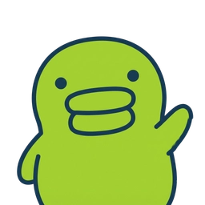

구치파치 피지컬AI
Lumo
시선이 흐트러지는 순간, 빛이 다시 데려옵니다
윤솔민 · 권희정 · 박소현 · 정시윤
TEAM

저희는 구치파치입니다
팀장
윤솔민
팀원
권희정
팀원
박소현
팀원
정시윤
커밋 106개, 4명이 나눠서 기록했습니다.
PROBLEM
시험 기간, 집중력은
시험 기간, 집중력은
47초마다 흔들립니다
사람의 평균 집중 지속 시간은 47초에 불과하다는 연구 결과가 있습니다. 수험생도, 재택근무자도 겪는 문제지만 방 안의 조명은 그 순간을 전혀 알지 못합니다.
LIMITATIONS
기존 스마트 스탠드는 "상태"를 모른 채
기존 스마트 스탠드는 "상태"를 모른 채
사람이 직접 조절해야 할 뿐
light_mode
BenQ 스마트 스탠드
밝기·색온도를 앱에서 사람이 직접 조절합니다.
lightbulb
샤오미 스마트 조명
역시 밝기·색온도를 사람이 매번 맞춰야 합니다.
notifications
단순 알림 앱
사용자 상태와 무관하게 정해진 알림만 울립니다.
SOLUTION
스스로 보고, 움직이고, 조언하는 조명, Lumo
visibility
비전
카메라로 사용자의 행동을 스스로 봅니다.
settings_input_component
IoT
서보모터로 스스로 움직이고 반응합니다.
insights
데이터 분석
행동 데이터를 바탕으로 집중력 분석 리포트를 생성합니다.
SENSING
카메라 둘 — 책상을 보는 눈,
카메라 둘 — 책상을 보는 눈,
사람을 보는 눈
menu_book
YOLO + ByteTrack
책상캠 · Desk Cam
책상 위 사람과 물건을 찾아, 지금 필요한 대상에 서보를 조준합니다.
face
MediaPipe · PERCLOS
사람캠 · Face Cam
눈 깜빡임·감김 비율(PERCLOS)로 졸음과 마이크로슬립을 0.5초 안에 포착합니다.
SIGNAL · 갈래 B
사람 → 앞 구역 → 타깃,
사람 → 앞 구역 → 타깃,
그 순서로 조명이 따라갑니다
person_search
사람 인식
arrow_forward
crop_free
앞 구역 좁히기
arrow_forward
my_location
타깃 서보 조준
상태머신 NORMAL → CARRYING → OBSERVING → FOLLOW_OUT
SIGNAL · 갈래 C → A
졸음 신호는 여섯 단계(S1~S6)로 받습니다
S1 몰입 — PERCLOS 10% 미만, 변화 없음
S2 예열 — 하품 1회, 색 살짝 차갑게·밝기 ×1.25
S3 산만 — 고개 이탈·휴대폰, 조명은 자리 유지
S4 각성 유도 — PERCLOS 15% 초과, 6500K로 전환
S5 개입 — 마이크로슬립, 1Hz 파동 3회 + 팬 왕복
S6 휴식 권유 — 30분 내 S5 3회, 앰버로 전환
마이크로슬립엔 1Hz 파동을 딱 3번만 주고, 30분 안에 세 번 반복되면 더 세게 켜는 대신 휴식을 권합니다.
HARDWARE
하드웨어 구성요소
developer_board
ESP32C6 · ESP32S3
settings_input_component
서보 모터 3축
light
LED 모듈
videocam
카메라 × 2
play_circle LIVE DEMO
지금부터 라이브로 보여드립니다
DEMO 1
책을 따라 움직입니다
책 카메라 영상 위에 탐지 상자·앞 구역·조준선이 실시간으로 흐릅니다. 책을 옆으로 옮기면 조명이 따라갑니다 — 발표 현장에서 보여드립니다.
DEMO 2
졸음을 감지합니다
얼굴 카메라가 눈 감김 비율(PERCLOS)을 재고, 단계에 따라 빛이 바뀝니다. 발표 현장에서 보여드립니다.
DEMO 3
당신이 집중을 잃는 순간,
앱에서 색·밝기·각도를 직접 조절합니다
스마트 조명 앱
색·밝기는 MQTT 로 램프 보드에 직결되고,
각도는 노트북을 거쳐 서보로 갑니다.
각도는 노트북을 거쳐 서보로 갑니다.
당신이 집중을 잃는 순간,
Lumo가 먼저 알아챕니다.
구치파치 · 윤솔민 · 권희정 · 박소현 · 정시윤
yoonsoli/lumo-lamp